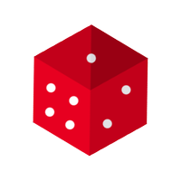

<div class="homepage-container">
  <div class="background-top-left"></div>
  <div class="background-top-right"></div>
  <div class="background-bottom-right"></div>
  <div class="game-logo">
    
  </div>
  <div class="buttons-container">
    <button mat-raised-button color="primary" routerLink="../board" matTooltip="Kliknij aby rozpocząć nową grę">Nowa gra</button>
    <button mat-raised-button
            color="primary"
            routerLink="board"
            matTooltip="Kliknij aby kontynować grę"
            [disabled]="!isGameStateAvaiable">Kontynuuj grę</button>
    <mat-icon matTooltip="Ustawienia gry">settings</mat-icon>
  </div>
  <footer matTooltip="Aktualna wersja gry">version 1.0</footer>
</div>
